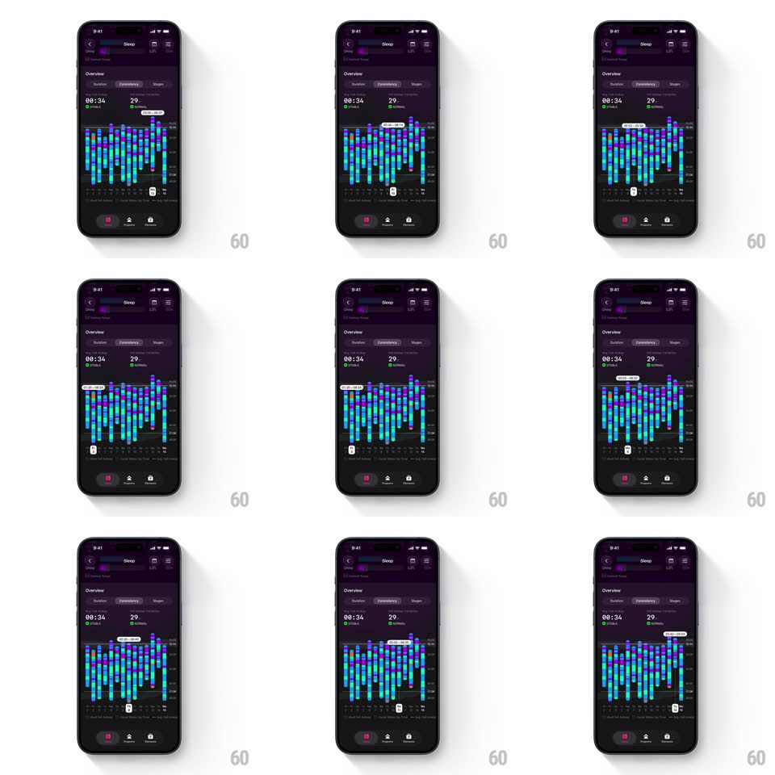

Media
Frame-by-frame

Rebuild this interaction 1:1: The Outsiders' sleep consistency graph - scrubbing the blue bar chart snaps a tooltip from day to day with a spring, highlighting each bar and reading its sleep window ("11:03 - 07:39") as you cross it.

Rebuild this interaction 1:1: The Outsiders' sleep consistency graph - scrubbing the blue bar chart snaps a tooltip from day to day with a spring, highlighting each bar and reading its sleep window ("11:03 - 07:39") as you cross it.
## Integration
Integration: stack-agnostic spec - springs given as stiffness/damping, timed motions as duration + curve; map every value to your framework and animation library of choice.
## Scene
Dark purple Sleep screen: "Overview" with Consistency tab active, stats "00:34" and "29", a dense bar chart of blue-to-cyan vertical bars (one per day) over week labels, and the bottom tab bar. Scrub state: one bar highlighted brighter, a tooltip pill above it showing the day's sleep window, and a small marker below the axis.
## Motion spec
Pattern: snapping bar scrub, gesture-driven.
- Scrub: dragging moves a highlight cursor 1:1; as it crosses each bar's midpoint the selection snaps to that bar (spring ~420/22, visible overshoot) with haptic.
- Highlight: the selected bar brightens to cyan (120ms); the previous selection returns to base blue.
- Tooltip: the pill above re-centers over the selected bar (spring with the same snap) and swaps its value with a quick fade (100ms).
- Axis: the week labels stay static; only the selection moves.
## Calibration
- The snap is per-bar - the finger can rest between bars and the selection still owns the nearest one.
- The tooltip never overlaps the top edge; it clamps inside the chart.
## Reduced motion
Tap selects a bar with a 150ms highlight fade; no spring snap.
## Don't miss
- The tooltip shows the full sleep window (start - end), not a duration.
- Bars are blue by default, cyan when selected - no outline change.